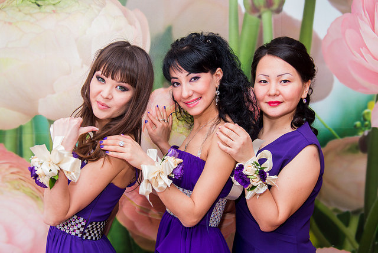
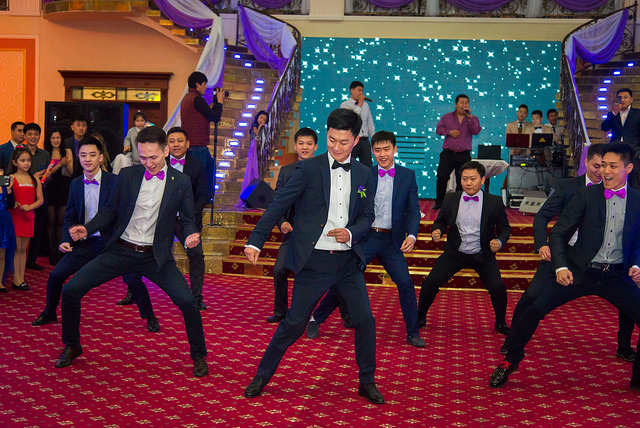

The bridesmaids are members of the bride's party in a wedding. A bridesmaid is typically a young woman, and often a close friend or sister. She attends to the bride on the day of a wedding or marriage ceremony. Traditionally, bridesmaids were chosen from unwed young women of marriageable age. The principal bridesmaid, if one is so designated, may be called the chief bridesmaid or maid of honor if she is unmarried, or the matron of honor if she is married.©

In North America, a groomsman is one of the male attendants to the groom in a wedding ceremony. In Britain, a similar role is performed by an "usher". Usually, the groom selects close friends and relatives to serve as groomsmen, and it is considered an honor to be selected. From his groomsmen, the groom usually chooses one to serve as best man, the groom usually chooses one to serve as best man, the groom usually chooses one to serve as best man, the groom usually chooses one to serve as best man.©